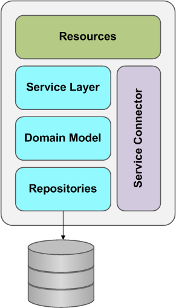

Microservice architecture
A microservice architecture is the natural consequence of applying the single responsibility principle at architectural level. Within a microservice architecture the functionality is decomposed in a set of collaborating services and the scale cube is applied. Services communicate with each other either using synchronous protocols like HTTP/REST or asynchronous protocols such as AMQP/JMS. In this way, business domain concepts are modelled as resources with one or more of these managed by a microservice. Since a business request can span multiple microservices separated by network partitions, it is important to consider possible failures in the system. Techniques such as timeouts, circuit breakers, bulkheads can help to maintain overall system uptime in spite of outage.
Often microservices display similar internal structure consisting of some or all of the layers as shown below.

- Resources act as a mapper between the application protocol as exposed by the micro service and messages to the services/entities that are representing the domain. Typically, they are thin, responsible for sanity checking the request, and providing a protocol specific response according to the outcome of the request. If we for example expose the resources via REST and follow internally the CQRS approach, this layer would be responsible for converting the HTTP REST request into a Command.
- The microservice logic resides in the domain model. Services coordinate across multiple domain activities, whilst repositories act on collections of domain entities and are often persistent. When a resource receives a request and has validated it, it either directly access the domain model, or, if many entities must be coordinated, it delegates the request to a service.
- If a service has another service as a collaborator, some logic is needed to communicate with the external service. A service connector encapsulates message passing with a remote service, marshalling requests and responses from and to other services. Service connectors should be resilient to outage of remote components.
Normally services are developed independently from another. Typically, a team will act as guardian to one or more microservices,
Each service has its own storage in order to decouple from other services. When necessary, consistency between services is maintained using application events.
Following this approach has a number of benefits:
- Each service is relatively small
- Easier for developers to understand.
- The web container starts fast, which makes developers more productive and speed up deployments.
- Each service can be deployed independently of other services; e.g. easier to deploy new versions of services frequently.
- Easier to scale development. It enables to organize the development effort around multiple teams. Each team can develop, deploy, and scale their service independently of all other teams.
- Improved fault isolation.
- Each service can be developed and deployed independently.
- Eliminates long term commitment to a technology stack.
There are however also a number of drawbacks:
- Developers must deal with the additional complexity of creating distributed systems.
- Testing is more difficult.
- Developers must implement the inter-service communication mechanism
- Implementing use cases that span multiple services without using distributed transactions is difficult (See Try-Cancel/Confirm)
- Implementing uses cases that span multiple services requires careful coordination between the teams.
- Deployment complexity in production; there is additional operational complexity of deploying and managing a system comprised of many different services.
- Increased memory consumption. The microservice architecture replaces a monolithic application with N service instances. If each service runs in its own JVM (which is usually necessary to isolate instances) there is a overhead of N-1 JVM runtimes. Moreover, if each service runs on its own VM the overhead is even higher.
A challenge is deciding how to partition the system into microservices. One approach is to partition services by use case. We could for example have a micro service shipping within a partitioned e-commerce application that is responsible for shipping completed orders. Another approach is to partition by entity. This kind of service is responsible for all operations that operate on entities of a given type.
Ideally, each service should have only a small set of responsibilities. The Single Responsible Principle states that every class should have responsibility over a single part of the functionality provided by the software, and that responsibility should be entirely encapsulated by the class. It makes sense to apply this principle to microservice design as well.
MicroService naming guidelines
There isn’t a really straight forward approach regarding the naming of microservices but the following guidelines should help in creating a consistency in the naming of the microservices.
- Use camel case for microservice name
- Don’t reveal implementation details in the microservice name - This not only has the potential to lead to confusion when you change the implementation of the microservice, but is also a security risk as it gives the microservice consumer an insight in how the microservice may be implemented which they may be able to exploit.
- Don’t include protocol information in the microservice name - This is generally unnecessary as the service advertise itself at a particular endpoint which clearly defines the protocol to be used.
- Don’t include the word service in the microservice name
- Don’t include a version in the microservice name
- Name microservice to entity at which it operates - Microservices which operate on a specific entity should be named after the entity. For example if service that operates on customers may be simple named Customer.
- Name microservice to functionality it performs - Certain microservices are taking care of certain processes and therefore the use of verbs in the service name is common. For example a service that orchestrates the device registration could be called RegisterDevice.
Naming conventions may seem trivial at first, but as the number of microservices grow, so will the potential to reuse. In larger organizations, this means that more and more architects, analysts, and developers are discovering and then incorporating foreign services within their solution designs. The effort required to establish a consistent level of clarity across all microservices pays off quickly when interoperability and reuse opportunities are more easily recognized and seized.
Related Patterns
- API Gateway - defines how clients access the services in a microservice architecture.
- Client side discovery and Service side discovery - Patterns used to route requests for a client to an available microservice.
- Command Query Response Seperation - Helps develop scalable, extensible and maintainable applications.
- Domain Driven Design - Set of patterns for building enterprise applications based on the domain model.
- Monolithic Architecture - alternative to the monolithic architecture.
- Service Connector - Provide high level interface that hides implementation details regarding communication, thereby making the use of the microservice easier.
- Service Statelessness - To have services scalable we should attempt to make them statelessness.
See also
- JBOSS OSGI User guide - Guide explaining how to deploy application as OSGI bundle on JBOSS server.